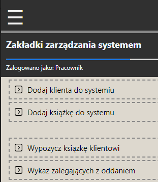

Skoro strona główna jest gotowa, czas na kolejne funkcjonalności.
Po kliknięciu ikony burgera wysunie się menu boczne.
Przygotujemy funkcjonalność dodawania kiążki do bazy danych.

Zmodyfikuj plik menu2.html dodając action=" InsertBook.php " oraz metodę przesłania danych
formulaża POST.
Metoda POST zapisuje dane w zapytaniu HTTP wysyłanym do serwera.
Metoda GET zapisuje dane w adresie URL wysyłanym do serwera.
Można powiedzieć że GET w przeciwieństwie do POST jest jawny.
Ostatnią żeczą do zmodyfikowania w tym formulażu jest dodanie atrybutów name="" do inputów.
 Poniżej przedstawiono zawartość pliku który należy utwożyć InsertBook.php wraz z komentarzami.
Poniżej przedstawiono zawartość pliku który należy utwożyć InsertBook.php wraz z komentarzami.
 Gdy skończysz pisać przetestuj nową funkcjonalność i upewnij się że książka została dodana do tabeli `repertuar`.
Gdy skończysz pisać przetestuj nową funkcjonalność i upewnij się że książka została dodana do tabeli `repertuar`.